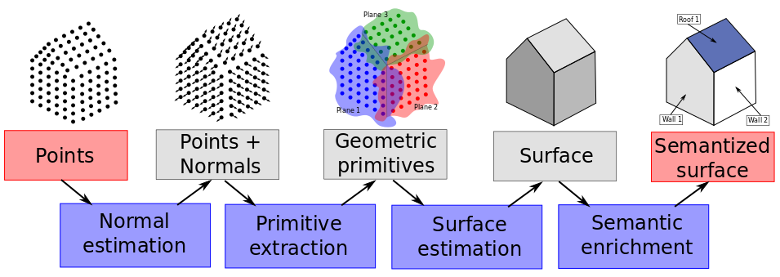

Thesis
Automatic reconstruction of digital buildings
at LIGM, University Paris-Est Marne-La-Vallée, 2011-2014.
Under the direction of Renaud Marlet.

Downloads
Abstract
The interest for digital models in the building industry is growing rapidly. These centralize all the information concerning the building and facilitate communication between the players of construction: cost evaluation, physical simulations, virtual presentations, building lifecycle management, site supervision, etc. Although building models now tend to be used for large projects of new constructions, there is no such models for existing building. In particular, old buildings do not enjoy digital 3D model and information whereas they would benefit the most from them, e.g., to plan cost-effective renovation that achieves good thermal performance. Such 3D models are reconstructed from the real building.
Lately a number of automatic reconstruction methods have been developed either from laser or photogrammetric data. Lasers are precise and produce dense point clouds. Their price have greatly reduced in the past few years, making them affordable for industries. Photogrammetry, often less precise and failing in uniform regions (e.g. bare walls), is a lot cheaper than the lasers. However most approaches only reconstruct a surface from point clouds, not a semantically rich building model. A building information model is the alliance of a geometry and a semantics for the scene elements.
The main objective of this thesis is to define a framework for digital model production regarding both geometry and semantic, using point clouds as an entry.
The reconstruction process is divided in four parts, gradually enriching information, from the points to the final digital mockup.
First, we define a normal estimator for unstructured point clouds based on a robust Hough transform. It allows to estimate accurate normals, even near sharp edges and corners, and deals with the anisotropy inherent to laser scans.
Then, primitives such as planes are extracted from the point cloud. To avoid over-segmentation issues, we develop a general and robust statistical criterion for shape merging. It only requires a distance function from points to shapes.
A piecewise-planar surface is then reconstructed. Planes hypothesis for visible and hidden parts of the scene are inserted in a 3D plane arrangement. Cells of the arrangement are labelled full or empty using a new regularization on corner count and edge length. A linear formulation allow us to efficiently solve this labelling problem with a continuous relaxation.
Finally, we propose an approach based on constrained attribute grammars for 3D model semantization. This method is entirely bottom-up. We prevent the possible combinatorial explosion by introducing maximal operators and an order on variable instantiation.